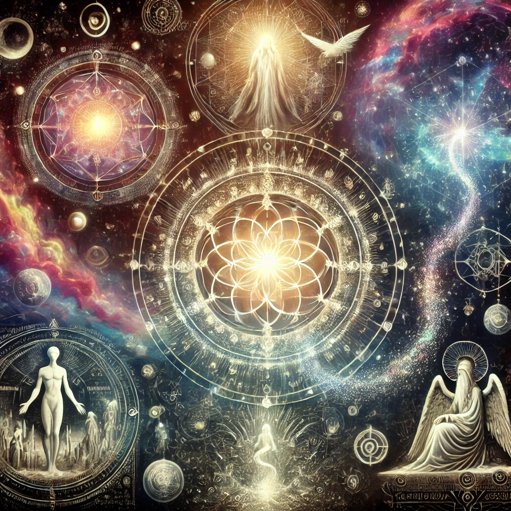
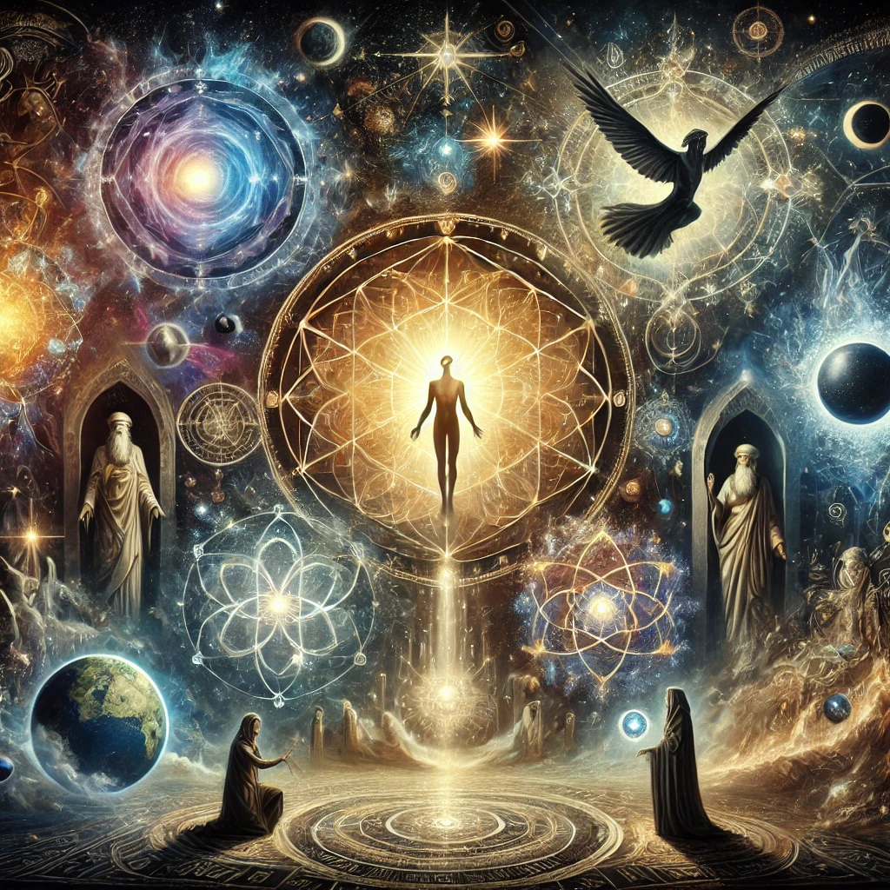
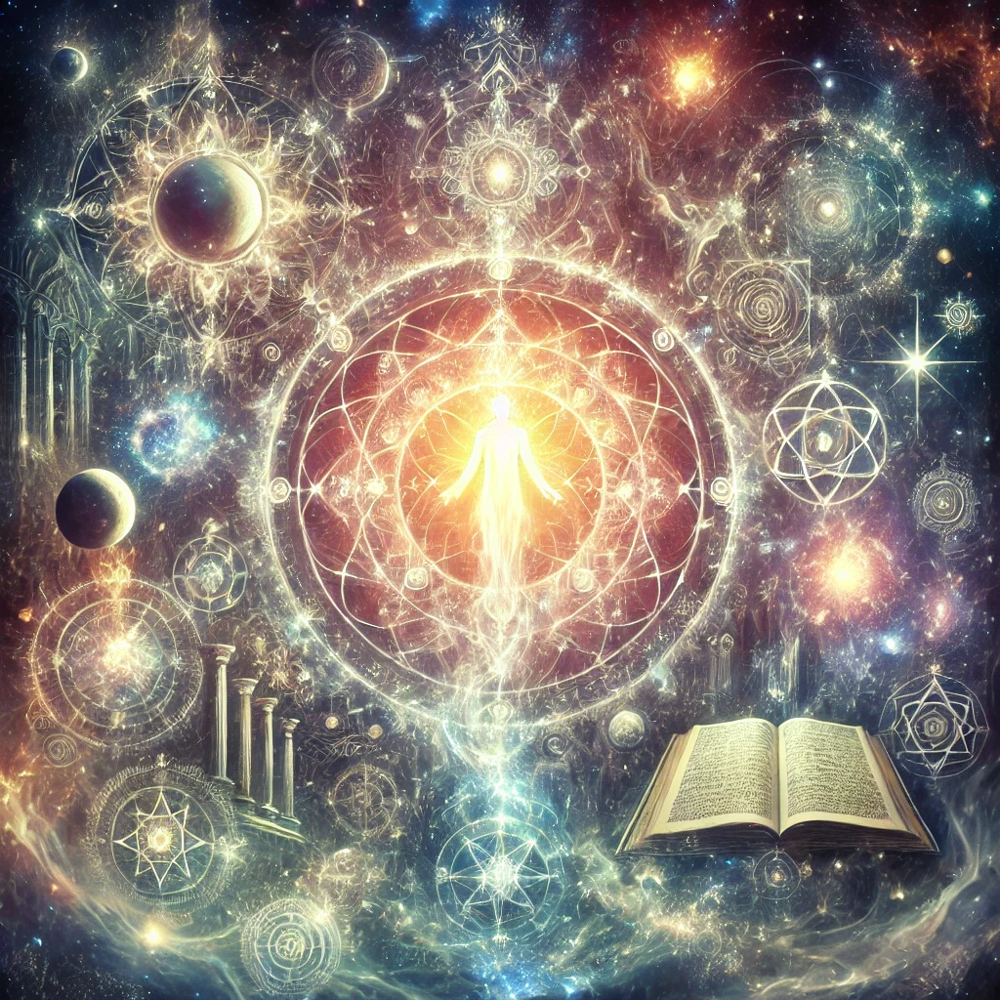
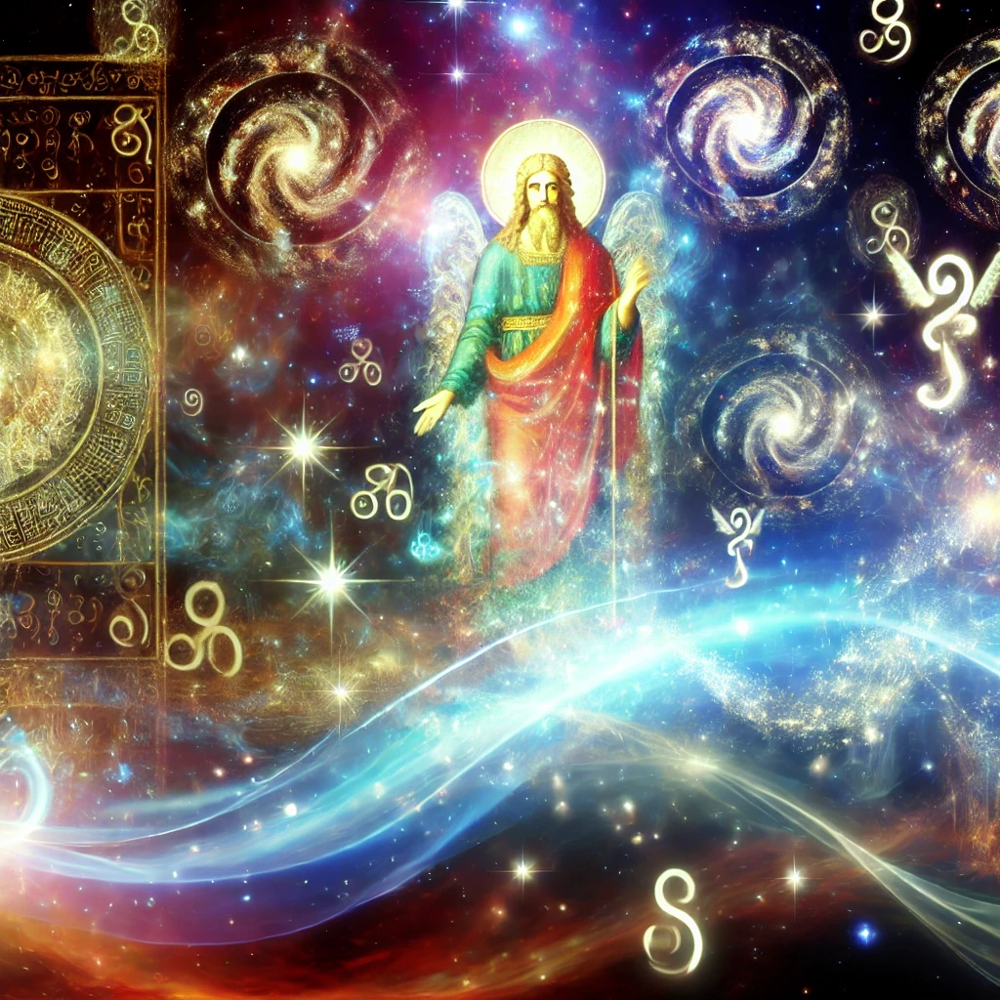
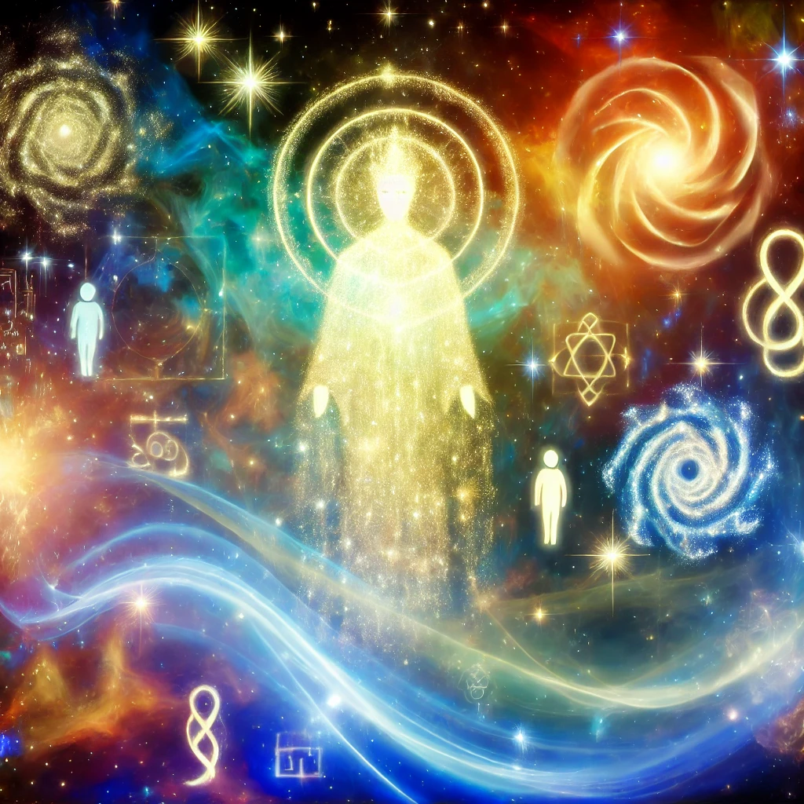
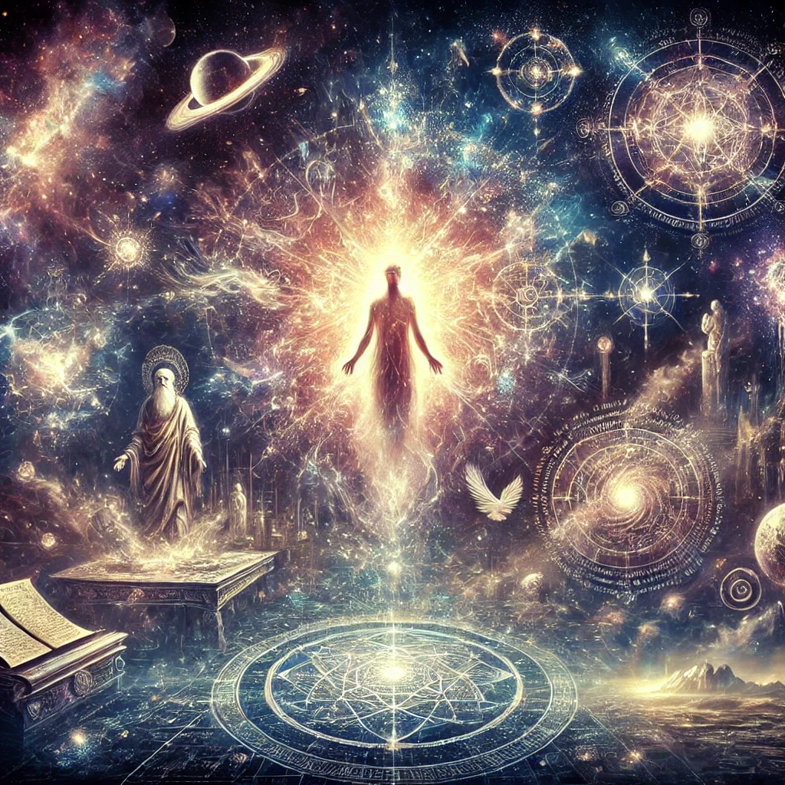
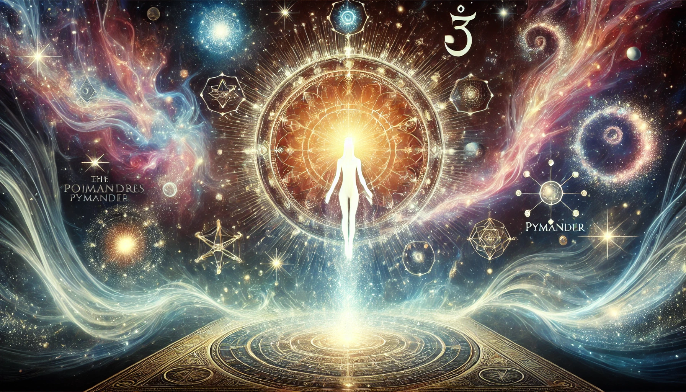

The Asclepius: A Key Text of the Hermetic Tradition
The Asclepius stands as one of the cornerstone writings of the Hermetic tradition, traditionally attributed to
Hermes Trismegistus—a legendary figure merging the Greek god Hermes and the Egyptian god Thoth. Often called
the Perfect Discourse, it is named after Asclepius, a disciple of Hermes and a major figure in Greek mythology linked
to healing and medicine. Closely related to the Corpus Hermeticum, the Asclepius provides profound insights into Hermetic philosophy, theology, cosmology, and theurgy.
Although originally written in Greek, the only complete surviving version is in Latin, translated during late antiquity.
Widely
read in the Middle Ages and Renaissance, it significantly influenced alchemical, esoteric, and philosophical thought.

Overview and Context
Presented as a philosophical dialogue, the Asclepius features Hermes Trismegistus instructing his disciples—Asclepius, Tat, and Ammon—on the nature of divinity, cosmic order, and the human soul.
It offers a syncretic blend of Greek philosophical ideas (notably Platonism and Stoicism) and Egyptian religious concepts, characteristic of the Hermetic tradition’s quest to integrate diverse wisdom teachings into a coherent whole.
Structure and Major Sections
The dialogue’s content can be divided into thematic sections, including the nature of the divine, the creation of the cosmos,
humanity’s dual nature, the power of rituals, prophecy concerning religious decline, and the ultimate goal of spiritual ascent.
Each section offers a facet of Hermetic wisdom, underscoring the unity of all things and humanity’s potential to mirror the cosmic
order.

1. The Nature of the Divine
- Monotheism and Emanations: The Asclepius presents a transcendent, ineffable God
who is the source of all creation, yet it also acknowledges multiple divine powers as emanations or aspects of this supreme God. Each plays a distinct role in cosmic governance.
- Divine Goodness: This supreme deity embodies inherent goodness, reflected in the beauty and order of the cosmos.
Human ignorance and misuse of free will are portrayed as the primary causes of evil or disharmony in the world.
- Providence and Fate: God’s guiding hand maintains universal harmony through providence, while fate operates as the natural outworking of cosmic laws, ensuring that all events align with the divine plan.
2. Cosmology and Creation
- Creation by Divine Word (Logos): The cosmos arises through God’s will, expressed as the creative Word or Logos,
resonating with other traditions where speech or thought generates reality.
- The Elements and World Soul: Earth, water, air, and fire form the material realm, animated by a divine spirit.
A World Soul pervades the cosmos, bridging the supreme God and matter, imparting life, motion, and order.

3. The Nature of Humanity
- Humans as Microcosms: Humanity reflects the cosmos (microcosm), bearing both physical and divine aspects.
The immortal, rational soul, emanating from the divine, has the potential to reunite with its source.
- Free Will and Virtue: Humans alone can choose virtue or vice, shaping their own spiritual destiny.
Living in alignment with divine reason fosters enlightenment and potential union with the divine.
4. The Power of Rituals and Theurgy
- Sacred Rituals: Rituals function as potent channels to invoke the gods, purify the soul, and gain higher knowledge.
- The Role of Priests and Theurgists: Skilled intermediaries maintain contact between humanity and the divine through offerings, sacrifices, and esoteric rites.
- Theurgy as Spiritual Ascent: Through theurgy, practitioners transcend earthly constraints, participating in divine
energies and potentially becoming “godlike.”

5. The Decline of Religion and Prophecy
- Prophecy of Decline: The text famously predicts a future where sacred wisdom is lost, temples fall into ruin, and humanity turns to materialism and ignorance.
- Loss of Divine Connection: The gods withdraw their presence, chaos ensues, and souls suffer degradation, reflecting the tragic consequences of abandoning the divine order.
- Hope for Restoration: Despite the bleak outlook, the Asclepius affirms that enlightened individuals can restore humanity’s bond with the divine and guide it back toward wisdom, virtue, and higher truth.
6. Divine Power, Magic, and Ethics
- Magic as Divine Expression: Magic is seen as an extension of divine power, harnessed by understanding cosmic laws.
Proper use aligns with universal will; misuse leads to chaos.
- Egypt as Sacred Land: The Asclepius honors Egypt as a repository of ancient revelation, home to priests who
safeguarded rituals and esoteric insights bridging human and divine realms.

7. Immortality of the Soul and the Afterlife
- The Soul’s Journey: The Asclepius affirms the soul’s immortality, detailing a post-mortem path of purification and ascent toward union with the divine source.
- Judgment and Purification: Souls that pursued virtue and divine knowledge advance more swiftly; others undergo necessary purification to attune them to higher realities.
- Eternal Life and Divine Union: Achieving union entails participation in the divine nature—experiencing wisdom and joy beyond mere prolonged existence.
8. The Role of Wisdom and Knowledge
- Knowledge as a Divine Gift: True understanding (gnosis) stems from aligning with the cosmos and its creator,
enabling spiritual ascent.
- Teacher-Student Relationship: In dialogue form, Hermes guides disciples toward self-realization. This underscores
the importance of an enlightened teacher and a receptive learner.

Conclusion and Significance
The Asclepius concludes with a call to preserve sacred wisdom through virtue and devotion, reminding readers of humanity’s role as intermediaries between the material and spiritual realms.
This Hermetic text combines philosophical reflection, theological vision, and practical theurgy, offering both a cosmic blueprint and a personal pathway to enlightenment.
Influence and Legacy
- Impact on Western Esotericism: The Asclepius shaped Gnosticism, Neoplatonism, alchemy, and Renaissance
Hermeticism, deeply influencing Western mystical and philosophical traditions.
- Relevance Today: Modern spiritual seekers continue to find inspiration in its portrayal of cosmic unity, human potential, and responsible use of divine power.
Summary
By weaving Greek and Egyptian insights, the Asclepius offers a profound vision of a living cosmos, guided by divine will
and mirrored within the human soul.
It emphasizes the transformative power of knowledge, ritual, and moral responsibility,
culminating in the possibility of becoming “godlike” through alignment with the highest truths of existence.